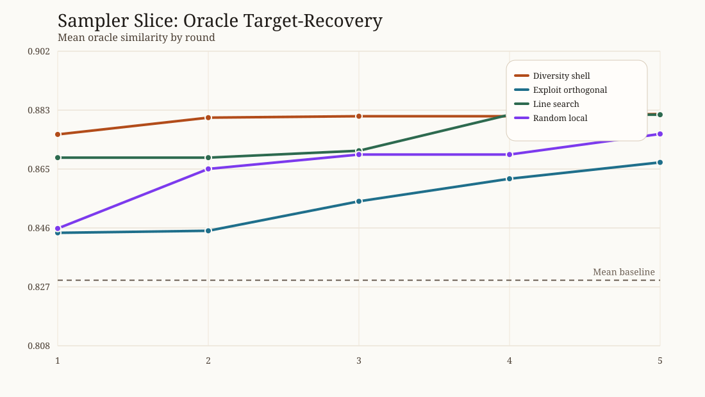
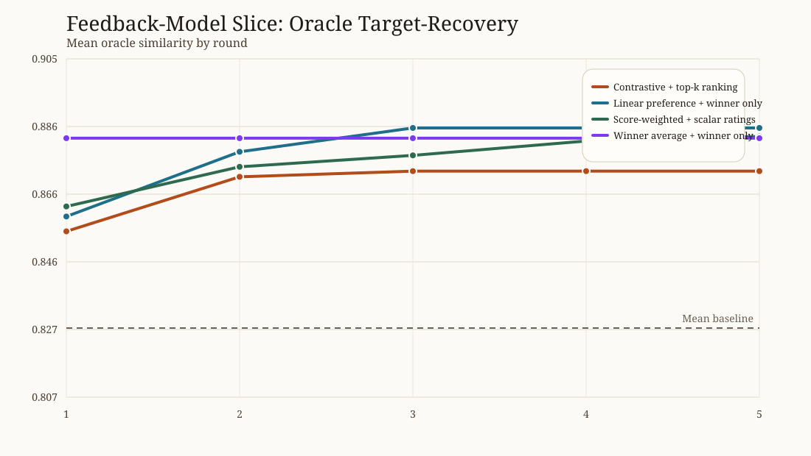

Sampler and Feedback Comparison Analysis
Sampler slice
| policy | final best | delta baseline -> final |
|---|---|---|
| Diversity shell | 0.882 | 0.053 |
| Exploit orthogonal | 0.867 | 0.038 |
| Line search | 0.882 | 0.053 |
| Random local | 0.876 | 0.032 |
Feedback-model slice
| policy | updater | feedback | final best | delta baseline -> final |
|---|---|---|---|---|
| Contrastive + top-k ranking | contrastive_preference |
top_k |
0.873 | 0.045 |
| Linear preference + winner only | linear_preference |
winner_only |
0.885 | 0.046 |
| Score-weighted + scalar ratings | score_weighted_preference |
scalar_rating |
0.883 | 0.038 |
| Winner average + winner only | winner_average |
winner_only |
0.882 | 0.053 |
Figures

